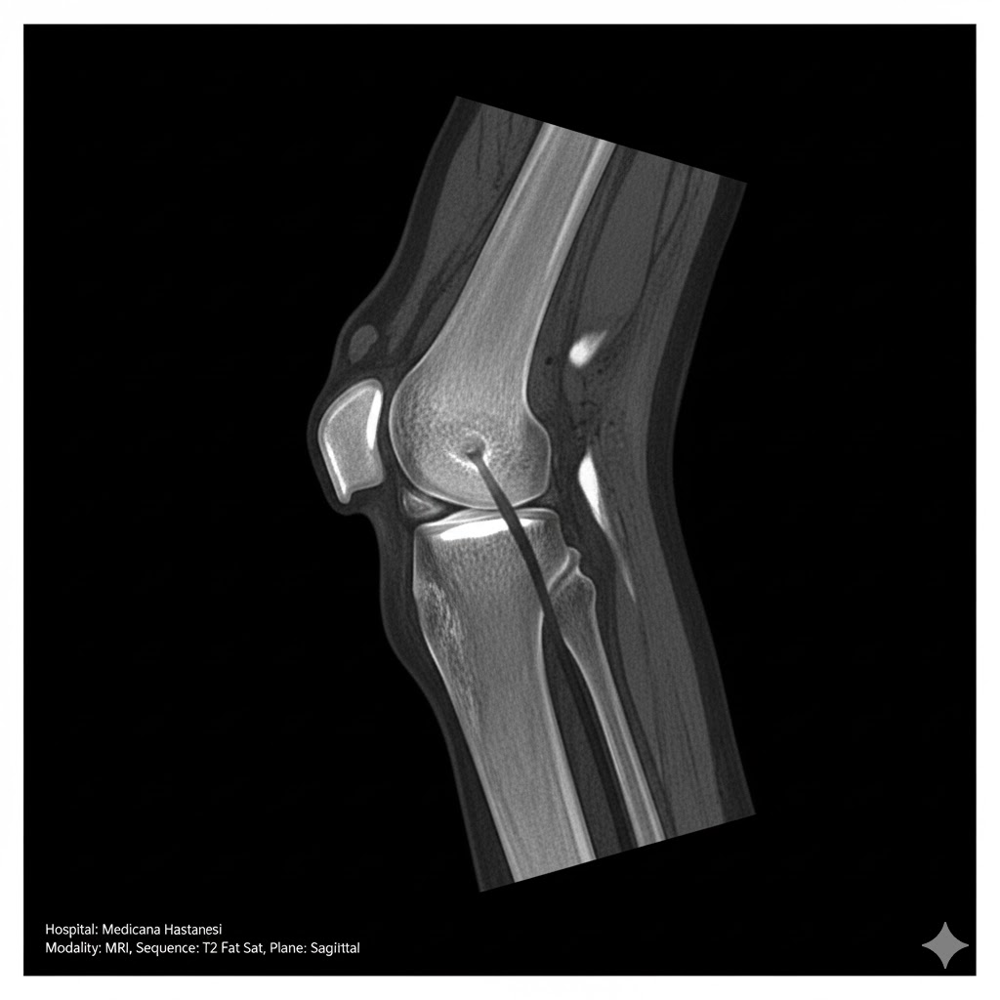
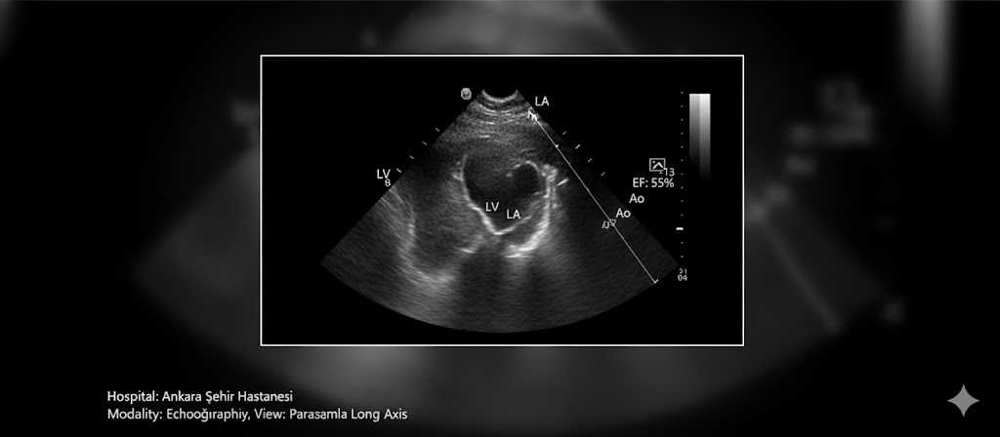
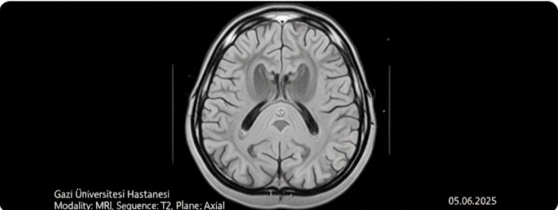

Hoş Geldiniz, Müslümcan Bey
E-Sağlık sistemine hoş geldiniz. Sağlık bilgileriniz güvende.
Güvenli Veri
Sağlık verileriniz en üst düzey güvenlik ile korunuyor
7/24 Erişim
İstediğiniz zaman sağlık bilgilerinize ulaşın
Mobil Uyumlu
Her cihazdan kolayca erişim sağlayın
Yapay Zeka Sağlık Asistanı HEMŞO (Gemini AI)
Ziyaretlerim
Ankara Şehir Hastanesi
15.09.2025Bölüm: Kardiyoloji
Doktor: Prof. Dr. Ahmet Yılmaz
Şikayet: Göğüs ağrısı, nefes darlığı
Tanı: Hipertansiyon kontrolü
Gazi Üniversitesi Hastanesi
22.08.2025Bölüm: Dahiliye
Doktor: Doç. Dr. Ayşe Kaya
Şikayet: Yorgunluk, halsizlik
Tanı: Vitamin D eksikliği
Ankara Üniversitesi Tıp Fakültesi
10.07.2025Bölüm: Endokrinoloji
Doktor: Uzm. Dr. Mehmet Demir
Şikayet: Şeker takibi
Tanı: Tip 2 Diyabet kontrolü
Medicana Hastanesi
05.06.2025Bölüm: Ortopedi
Doktor: Op. Dr. Zeynep Öztürk
Şikayet: Diz ağrısı
Tanı: Menisküs yırtığı şüphesi
Reçetelerim
Reçete #2025-001
AktifTarih: 15.09.2025
Doktor: Prof. Dr. Ahmet Yılmaz
Hastane: Ankara Şehir Hastanesi
İlaçlar:
- Ramipril 5mg - Günde 1x1 (Sabah)
- Aspirin 100mg - Günde 1x1 (Akşam)
- Atorvastatin 20mg - Günde 1x1 (Gece)
Reçete #2025-002
AktifTarih: 22.08.2025
Doktor: Doç. Dr. Ayşe Kaya
Hastane: Gazi Üniversitesi Hastanesi
İlaçlar:
- Vitamin D3 50.000 IU - Haftada 1x1
- Vitamin B12 1000mcg - Günde 1x1
Reçete #2025-003
Süresi DolduTarih: 10.07.2025
Doktor: Uzm. Dr. Mehmet Demir
Hastane: Ankara Üniversitesi Tıp Fakültesi
İlaçlar:
- Metformin 850mg - Günde 2x1
- Gliclazide 60mg - Günde 1x1
Raporlarım
Kardiyoloji Raporu
15.09.2025Doktor: Prof. Dr. Ahmet Yılmaz
Hastane: Ankara Şehir Hastanesi
Rapor Tipi: Ekokardiyografi
Sonuç: EF: %55, Normal sol ventrikül sistolik fonksiyonu. Hafif mitral yetersizliği mevcut.
Endokrinoloji Raporu
10.07.2025Doktor: Uzm. Dr. Mehmet Demir
Hastane: Ankara Üniversitesi Tıp Fakültesi
Rapor Tipi: Diyabet Kontrol Raporu
Sonuç: HbA1c: 6.8%. Diyabet kontrolü iyi seyrediyor. Tedaviye devam önerilir.
Ortopedi Raporu
05.06.2025Doktor: Op. Dr. Zeynep Öztürk
Hastane: Medicana Hastanesi
Rapor Tipi: MR Raporu
Sonuç: Sağ diz medial menisküste yırtık izlendi. Konservatif tedavi önerildi.
Hastalıklarım
Hipertansiyon (Yüksek Tansiyon)
Başlangıç: Mart 2023
Durum: Tedavi Altında
Tedavi: İlaç tedavisi devam ediyor
Son Kontrol: 15.09.2025
Tansiyon değerleri 130/85 civarında seyrediyor. Tuz kısıtlaması ve düzenli egzersiz önerildi.
Tip 2 Diyabet
Başlangıç: Ocak 2024
Durum: Kontrol Altında
Tedavi: Metformin 850mg 2x1
Son Kontrol: 10.07.2025
HbA1c: 6.8%. Kan şekeri takibi düzenli yapılıyor. Diyet kontrolü iyi.
Vitamin D Eksikliği
Başlangıç: Ağustos 2025
Durum: İyileşti
Tedavi: Vitamin D3 takviyesi tamamlandı
Son Kontrol: 22.08.2025
Vitamin D seviyesi normale döndü (35 ng/ml). Güneş ışığından yararlanma önerildi.
Tahlillerim
Tam Kan Sayımı
15.09.2025| Test | Sonuç | Referans | Durum |
|---|---|---|---|
| Hemoglobin | 14.5 g/dL | 13-17 g/dL | Normal |
| Lökosit | 7.800 /mm³ | 4.000-10.000 /mm³ | Normal |
| Trombosit | 245.000 /mm³ | 150.000-400.000 /mm³ | Normal |
Biyokimya Testleri
15.09.2025| Test | Sonuç | Referans | Durum |
|---|---|---|---|
| Açlık Kan Şekeri | 125 mg/dL | 70-100 mg/dL | Yüksek |
| HbA1c | 6.8 % | 4-6 % | Yüksek |
| Total Kolesterol | 210 mg/dL | <200 mg/dL | Yüksek |
| LDL Kolesterol | 135 mg/dL | <130 mg/dL | Yüksek |
| HDL Kolesterol | 45 mg/dL | >40 mg/dL | Normal |
| Trigliserid | 150 mg/dL | <150 mg/dL | Normal |
Vitamin Seviyeleri
22.08.2025| Test | Sonuç | Referans | Durum |
|---|---|---|---|
| Vitamin D | 35 ng/mL | 30-100 ng/mL | Normal |
| Vitamin B12 | 350 pg/mL | 200-900 pg/mL | Normal |
| Folat | 8.5 ng/mL | 3-17 ng/mL | Normal |
Radyolojik Görüntülerim
Göğüs Röntgeni
15.09.2025
Hastane: Ankara Şehir Hastanesi
Rapor: Kalp gölgesi normal sınırlarda. Akciğer parankimi doğal. Patolojik görünüm izlenmedi.
MR - Diz
05.06.2025
Hastane: Medicana Hastanesi
Rapor: Sağ diz medial menisküs posterior hornda vertikal yırtık. Ön çapraz bağ intakt. Minimal eklem sıvısı artışı.
Ekokardiyografi
15.09.2025
Hastane: Ankara Şehir Hastanesi
Rapor: Sol ventrikül boyutları normal. EF: %55. Hafif mitral yetersizliği. Diğer kapaklar normal.
BT - Kranial
20.04.2025
Hastane: Gazi Üniversitesi Hastanesi
Rapor: Beyin parankim yapısı normal. Hemoraji, iskemi veya kitle lezyonu izlenmedi.
Patolojik Bilgilerim
Biyopsi Sonucu - Deri
10.05.2025Hastane: Ankara Üniversitesi Tıp Fakültesi
Lokasyon: Sırt bölgesi
Makroskopi: 0.5 x 0.5 cm kahverengi lezyon
Mikroskopi: Benign melanositik nevüs. Malignite bulgusu izlenmedi.
Sonuç: Benign
Endoskopik Biyopsi
15.03.2025Hastane: Ankara Şehir Hastanesi
Lokasyon: Mide - Antrum
Makroskopi: Multiple mukozal doku fragmanları
Mikroskopi: Kronik gastrit bulguları. Helicobacter pylori negatif. Displazi veya malignite izlenmedi.
Sonuç: Benign
Acil Durum ve Kriz Bilgilerim
Önemli Uyarı
Acil durumlarda 112'yi arayın!
Alerjilerim
- İlaç Penisilin - Anafilaktik reaksiyon
- Besin Fıstık - Şişme, kaşıntı
Kan Grubu
A Rh(+)
Acil Durum İletişim
Ad: Ayşe Doğan (Eş)
Telefon: +90 532 123 45 67
Ad: Mehmet Doğan (Kardeş)
Telefon: +90 533 987 65 43
Kronik Hastalıklar
- Tip 2 Diyabet
- Hipertansiyon
Sürekli Kullandığım İlaçlar
- Metformin 850mg - Günde 2x1
- Ramipril 5mg - Günde 1x1
- Aspirin 100mg - Günde 1x1
- Atorvastatin 20mg - Günde 1x1
Yakın Hastaneler
-
Ankara Şehir Hastanesi
Bilkent, Ankara - 5 km
Tel: 0312 552 60 00
-
Gazi Üniversitesi Hastanesi
Beşevler, Ankara - 8 km
Tel: 0312 202 50 00
Randevu İşlemleri
Yeni Randevu Al
Mevcut Randevularım
Kardiyoloji Kontrolü
Ankara Şehir Hastanesi
Prof. Dr. Ahmet Yılmaz
10:00
Diyabet Kontrolü
Ankara Üniversitesi Tıp Fakültesi
Uzm. Dr. Mehmet Demir
14:30
Ortopedi Kontrolü
Medicana Hastanesi
Op. Dr. Zeynep Öztürk
11:00
Kardiyoloji Muayenesi
Ankara Şehir Hastanesi
Prof. Dr. Ahmet Yılmaz
Tamamlandı